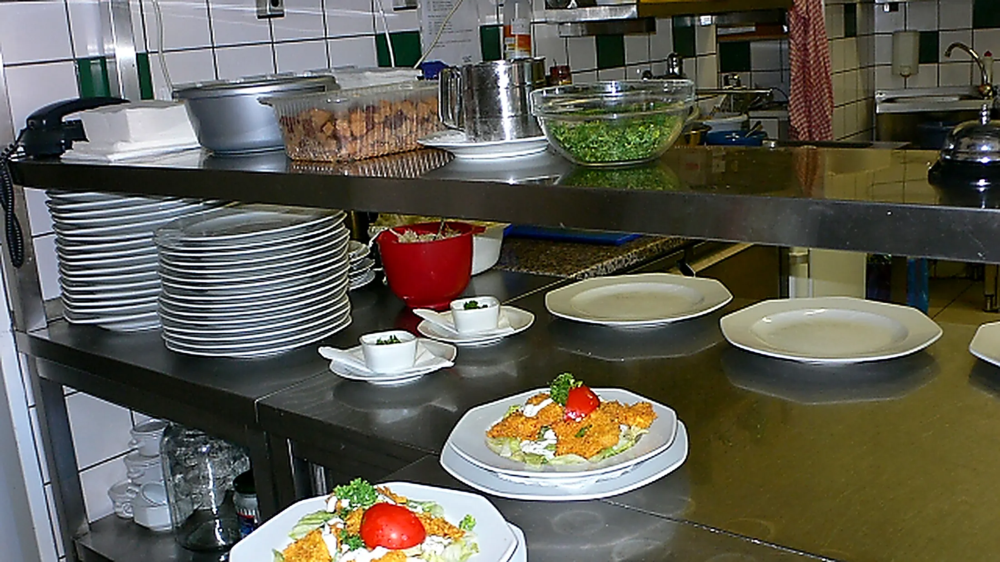

Jídelní a nápojový lístek
Výběr z naší stálé nabídky. Denní menu a sezonní speciality se mohou lišit, rádi vám je řekneme.
Seznam potravinových alergenů
Označování podle směrnice 1169/2011 Evropské unie.
- Obiloviny obsahující lepek a výrobky z nich
- Korýši a výrobky z nich
- Vejce a výrobky z nich
- Ryby a výrobky z nich
- Podzemnice olejná neboli arašídy a výrobky z nich
- Sójové boby a výrobky z nich
- Mléko a výrobky z něj
- Skořápkové plody, tedy všechny druhy ořechů
- Celer a výrobky z něj
- Hořčice a výrobky z ní
- Sezamová semena a výrobky z nich
- Oxid siřičitý a siřičitany v koncentracích vyšších než 10 mg na kilogram nebo litr
- Vlčí bob neboli lupina a výrobky z něj
- Měkkýši a výrobky z nich
Všechna zde podávaná jídla a nápoje mohou obsahovat tyto alergeny a jejich stopové prvky. Protože nemůžeme převzít plnou odpovědnost za výrobce základních surovin, nejsou vhodná pro alergiky.
Máte na něco chuť?
Rezervujte si stůl telefonicky a my pro vás připravíme místo.